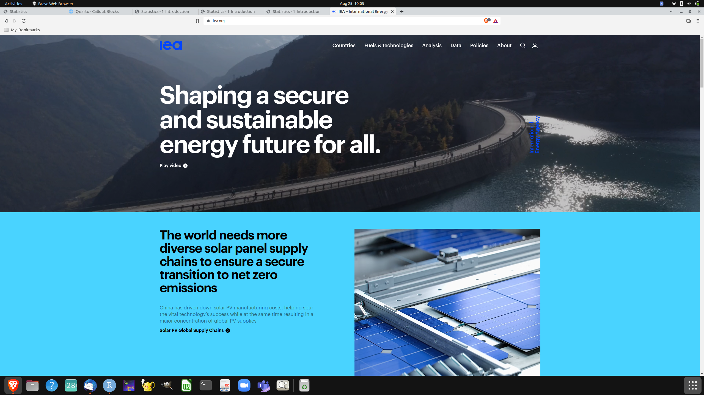
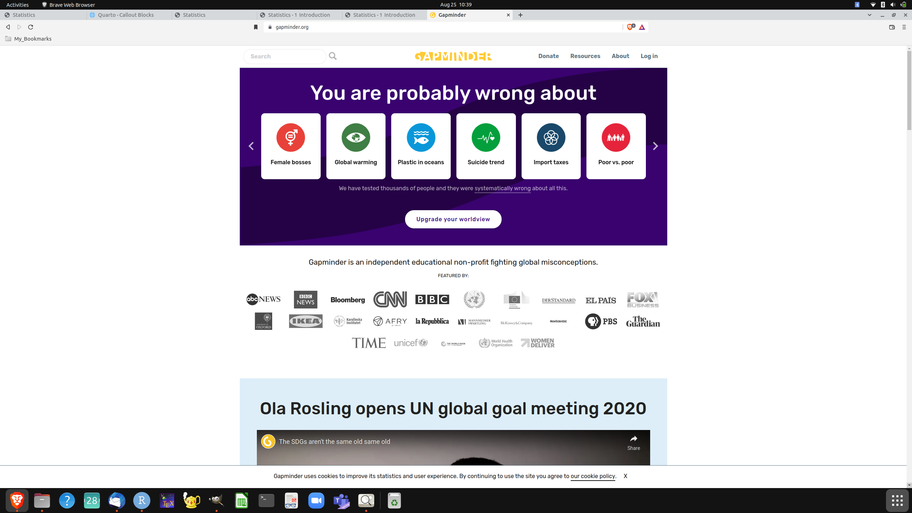
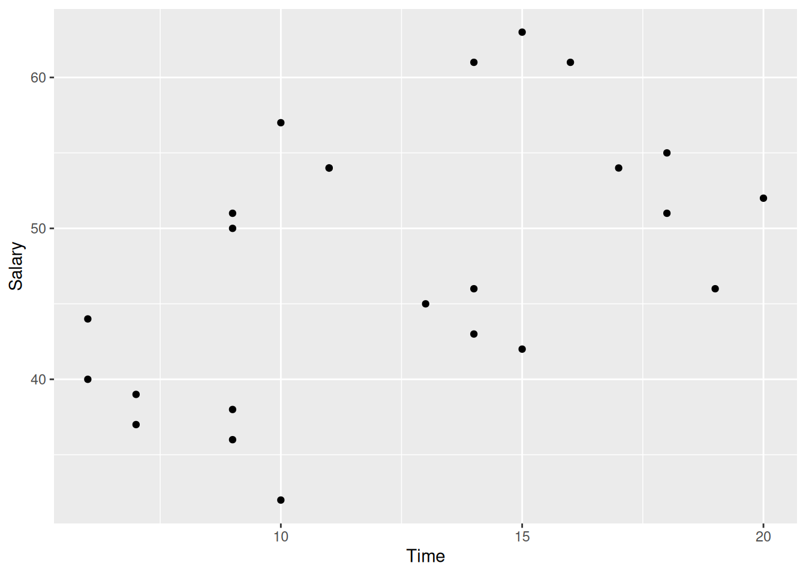
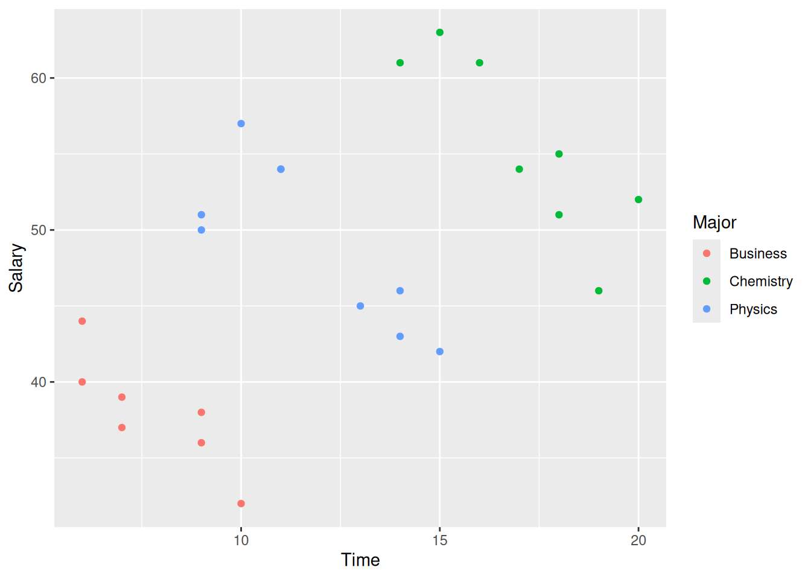
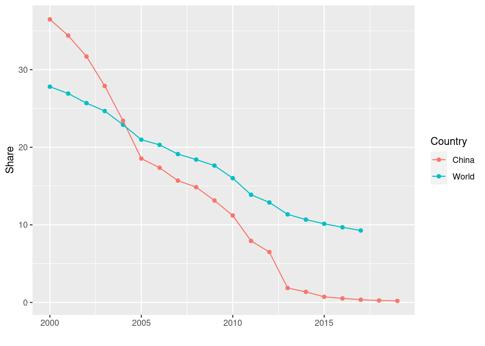

Welcome to the course Statistics: The art and science of learning from data. In this introductory chapter you will get an overview of the basic skills you will learn in this course by discussing a few examples.
Over time and with your active participation these skills will add a powerful seventh sense to your ability of experiencing the world. It will allow you to experience the world through data. Understanding data by the art and science of statistics is an essential skill you will need to navigate the modern world and to study many fields in the sciences.
TO DO: Overview of Unit 1 i.e. Introduction and Categorical Data
1.1 Experiencing the world through data
1.1.1 What are the major sources of electricity production in Kenya?
What is the biggest source of electricity production in Kenya? Answering this question needs data, listing and recording various forms of electricity production in specific countries. An internationally acknowledged organisation, which collects and reports these data is the International Energy Agency (IEA).
Accessing IEA data on the internet
If you have access to the internet, you can look up data and reports by the IEA on it’s website https://www.iea.org/1
1 A screenshot I have taken in August 2022 shows the website like this. In the upperm right part of the website there is a link called data which will bring you to the data collected by IEA. 
Now let’s take a quiz and guess. What do you think is actually the biggest source of electricity production in Kenya?
Coal
Renewable energy
Natural gas
Seitwerk: Expand for reading comment.
It would be great to make this like an online quiz, where you can click the answer and get right or wrong. Renewable energy is the right answer.
Consulting the IEA data, you will find that the correct answer is renewable energy. A very interesting website called gapminder, which analyzes the answers of many people to this question, finds that 61 % give a wrong answer to this question. Maybe they find it hard to imagine that 80 % of energy production in Kenya is already fossil free thanks to huge sources of geothermal- and hydropower.2 Even if you break the answers down by country you see that 38 % of people from Kenya get the answer wrong. Among the people from the UK, who answer this question even 72 % answer wrongly.
2 Geothermal electricity generation uses the earth’s natural heating energy - geothermal energy. A country needs to be located on a geothermal hot spot to make effective use of this energy source for electricity generation. At such a hotspot there are high temperatures beneath the earth’s surface which naturally produces steam. This steam can be used to spin turbines connected to a generator. This mechanism then produces electricity. Hydropower uses the water cycle to generate electricity by using dams to alter the flow of a river. The kinetic energy of the water spins turbines connected to a generator which produces electricity.
If you are not familiar with the details of electricity production using geothermal- and hydropower or if you are not completely sure how to interpret a number like 38 %, don’t worry for now. The point here is that you see that one useful consequence of being able to access, read and interpret data is that it can help to establish facts about the world. In this way data can help us to perhaps correct misconceptions we might have had about these facts.
The gapminder webpage
If you have internet access you can reach the gapminder webpage at https://www.gapminder.org/. I encourage you to visit this page at an occasion when you have access to the internet. You will be surprised how often you might have a wrong guess about basic facts in the world.3
3 Here is how the website looks like as of August 2022: 
In this course you will learn how to work with data and how to learn from these data in a systematic way.
1.1.2 How many trees are there on the planet?
Learning from data entails more than just establishing facts. This might not always be possible, either because you cannot access the relevant data or you cannot completely access them, since doing so would be way too expensive. When working with data you also need rigorous definitions of concepts, so that you can actually transform your experience about the world into data
Think for a moment about the following interesting example, which I learned from a wonderful book by the British statistician David Spiegelhalter (Spiegelhalter 2019). The example shows that even just categorizing and labeling things in the world to measure them and turn them into data can be challenging. A very basic question raised in the introduction of this book is:
Question:
How many trees are there on the planet?
It is clear that answering this question is more challenging than the task the IEA had to solve when listing energy sources by country around the world in a given time period. But before you go about to think how you might count all the trees on the planet, you have to answer an even more basic question, namely: What is a tree?
Some of you might think this is a silly and obvious question, which every child can answer. But what some might consider a tree others will consider just a shrub. Turning experience into data requires rigorous definitions. It turns out that such definitions can be given for trees. 4
4 For example the forestry expert Michael Kuhns writes: “…Though no scientific definition exists to separate trees and shrubs, a useful definition for a tree is a woody plant having one erect perennial stem (trunk) at least three inches in diameter at a point 4-1/2 feet above the ground, a definitely formed crown of foliage, and a mature height of at least 13 feet. This definition works fine, though some trees may have more than one stem and young trees obviously don’t meet the size criteria. A shrub can then be defined as a woody plant with several perennial stems that may be erect or may lay close to the ground. It will usually have a height less than 13 feet and stems no more than about three inches in diameter.” (Kuhns, n.d.)
But even with the definition at hand you cannot just go around the planet and count every plant that meets the criteria. So this is what the researchers investigating that question did according to (Spiegelhalter 2019):
“…They first took a series of of areas with a common type of landscape, known as a biome and counted the average number of trees per square kilometer. They then used satellite imaging to estimate the total area of the planet covered by each type of biome, carried out some complex statistical modelling, and eventually came up with an estimate of 3.04 trillion (3,040,000,000,000) trees on the planet. This sounds a lot, except that they reckoned there used to be twice this number.”
Now imagine that if long expert discussions are needed to precisely define something so seemingly obvious as a tree, clearly more complex concepts such as unemployment or the definition of the total value of goods and services produced in a country in a given year, known as Gross Domestic Product or GDP, is even more challenging.
There is no automatism or mechanical receipt how we can turn experience into data and the statistics that we use and produce are constructed on the basis of judgement. It is a starting point for a deeper understanding of the world around us. This is one of the reasons why in this course statistics is not only referred to as science, which it arguably is to some degree, but also as an art.
To guard against the trap of mindlessly fall into mechanical thinking or automatism it is sometimes helpful to make a rough plausibility estimates about the order of magnitude you might expect as a result for a really big number, like the number of trees on the globe.
Comment for Seitwerk: Please uncollapse
Here would be a good opportunity to engage students in an activity estimating a big number. Since this has an interactive part, which better works when in class together, one could set up the problem with some guidance in the online unit and then discuss solutions in class. It might be fun to add a competitive element by splitting the students in teams or pairs and rewarding the team/pair who comes closest to the true value. Let them first just guess and then lead them through the guestimation a bit more systematically: One way to lead students through this exercise might be: How many people are there in country X, how many children of school age, how many of them ride the bus, how many students can be transported by a bus etc. The estimate will have lots of uncertainty but be hopefully closer to the truth than most of the original unguided guesses. It is a first encounter for the students with propagation of uncertainty, an important topic in statistics more generally. The activity contains further interesting aspects like reliability of data sources and the design of data collection. I am not quite sure whether and how to build this in at this stage but maybe you have an idea or suggestion.
A good example would for instance be: How many school buses are there in country X?
1.1.3 What has happened to extreme poverty on the globe in the last 20 years?
One of the limitations of data as a source of knowledge about the world is that anything we choose to measure will differ across places, across persons or across time. When analyzing and trying to understand data we will always face the problem how we can extract meaningful insights from this apparent random variation. One challenge faced by statistics and one core topic in this course will thus be how we can distinguish in data the important relationships from the unimportant background variability.
Exploring and finding such meaningful relationships or patterns in data using the science of statistics and computational tools is one of the skills you will learn in this course.
An example of a pattern in data is if we can spot a trend, data values which are for example increasing or decreasing.
Consider the following data from the World Bank, reporting the share of people in the world who are living in extreme poverty. Extreme poverty is defined by the World Bank, an international development finance organisation for low and middle income countries located in the US5 as the percentage of people in the world who have to live on less that $ 1.90 per day.
5 The Worldbank is an international financial institution founded along with the International Monetary Fund in the Bretton Wods conference in 1944. It is located in Washington D.C. and finances projects in low and middle income countries. It also collects and processes data globally to support its activities and conduct development research. The Worldbank makes its data public in print or through its website https://www.worldbank.org/en/home
Let us have a look at a table showing the first 10 observations of this share
Code
# read poverty data from our project data folderpovdat_by_country <-read.csv("data/extreme_poverty/share-of-population-in-extreme-poverty.csv")# select the years from 2000povdat_world <-with(povdat_by_country, povdat_by_country[Entity =="World"& Year >=2000, ])# Keep only the year and the shareplot_data <- povdat_world[,c(3,4)]# Rename variablesnames(plot_data) <-c("Year", "Share")# produce a tablelibrary(knitr)kable(head(plot_data, n=10), row.names = F, digits =1)
Table 1.1: Share of world polpulation living in extreme poverty, Source: World Bank
The table shows that the share of people living in extreme poverty has been decreasing year after year for the first 10 years since the year 2000. This is a pattern which is called a downward trend.
Note that we did not show the whole series of numbers. The data points in our data-set actually range until the year 2017. Printing them all in a table quickly produces very large and unwieldy number array which is awkward to read.
Exploring data and detecting patterns is usually easier when we use the power of the human visual system. Humans are very good in finding visual patterns. Looking for patterns is almost visceral for us. We can’t help but looking for patterns. This almost instinctive human urge can also be misleading and suggesting patterns to us where there are in fact none.
In data exploration we can make use of the power of visualization by plotting data and looking at them graphically. The modern computer has made this form of displaying data particularly easy and powerful and visualizing data in data exploration is another core skill you are going to learn in this course.
So let us visualize the world poverty data. In our plot we draw the year on the x-axes and the share of people living in extreme poverty on the y-axes. This will give us a point for each year. To facilitate the spotting of a trend, we connect the annual observations by a line.
Figure 1.1: Share of world population living in extreme poverty from 2000 - 2017
Visualizing trends in world extreme poverty as an example of data exploration. In this case the data pattern reveals a stunning fact. Over almost two decades we can see a sharp fall in the share of extremely poor people when looked at from a global perspective.
Of course when we drill down to the level of individual countries this trend will not look the same everywhere and there might be countries where the share has actually increased. But overall we have seen a breathtaking steady decline. This is good news.6
6 When you have access to the internet you can have a closer look at these data at the very interesting website “our world in data” maintained by a consortium of Oxford University and University College London. See https://ourworldindata.org/extreme-poverty. The website has many interesting visualizations and options to select individual countries, country aggregates and make other selections of the data.
But does this trend mean that extreme poverty must disappear some years down the road? No, because nobody can tell whether the trend of the last two decades will go on also in the future.
Statistics can help us to think more systematically about patterns and in making systematic guesses how a pattern might continue in the future. This is another core skill you will learn in this course: Making predictions, which means using available data and information to make informed guesses about data and information we do not have.
Let us go back to the share of people in the world living in extreme poverty. As reported in our data the last actual observation for the global share in extreme poverty from the world bank is from 2017. There are more recent data for some regions but the global data since then are by now forecasts based on statistical techniques. The basic ideas of these techniques and how to apply them to data is a core skill you will learn in this course.
Now what does the World bank predict for the share of extreme poverty in the world? Let us look at the data again graphically to visualize the prediction.
Figure 1.2: Share of world population living in extreme poverty from 2000 - 2017 with predictions until 2021
Observe that the line showing the share of extreme poverty in the world takes different distinct future paths as we make predictions. What does this mean?
At the root of the predictions is an abstract model7, how the share of poverty changes over time. If the underlying data would correspond to a world before Covid the falling trend in poverty would just continue to fall, as it has done continuously from 2000 onward. In the graph you can see this scenario if you follow the black and the blue line. But taking the pandemic and the consequences into account the prediction of the World Bank is that extreme poverty after a almost two decades downward trend will rise again. This you can see by following the green and the red line. How much, this rise actually will be in the end depends on data we can not yet know.
7 If you have difficulties now to imagine what this means, don’t worry. We will learn in detail what a model is and how it can be interpret. In practice a model is usually an equation which provides a low-dimensional summary of a dataset. This summary is then used to make predictions.
When we make informed guesses based on observed data on information we do not yet have there is uncertainty involved. Using the theory of probability in combination with statistics we can quantify this uncertainty. Quantifying the uncertainty attached to predictions is the third basic skill you will learn in this course.
1.1.4 Does taking your time in college pay off?
A newspaper in Germany reported that the more semesters needed to complete an academic program at the university the greater the starting salary in the first year of a job. The report was based on a study that used a random sample8 of 24 people who had recently completed an academic program.
8 We will later in the course learn in detail what a random sample is. For the moment imagine that there is a mechanism which allows to select these 24 students at random from the large population of all university students in Germany. When a sample is random, every member in the sample has the same probability of beeing chosen from the population.
Information was collected on the number of semesters each person in the sample needed to complete the program and the starting salary, in thousand Euros, at the beginning of the job.
The data are shown in the following plot
Code
dat <-read.csv("data/college_years_salaries/coll_sal.csv")library(ggplot2)p <-ggplot(dat, aes(x=Time, y=Salary)) +geom_point()ggsave(plot=p, filename="figures/Years_in_college_versus_starting_salary.png")p

Relation between the semesters needed by a random sample of 24 German students to complete an academic university programm and the starting salary in the first year in the job.
What you see in this picture is a so called scatter-plot. It takes the data and plots all pairs of time in semesters needed to complete the academic university program and the starting salary in the job, where the first value is shown on the x-axis and the second on the y-axes. The points you draw like this are “scattered” all over the place, but it seems that “by and large” there is also some trend - shown as a blue line - like this:
Code
p <-ggplot(dat, aes(x=Time, y=Salary)) +geom_point() +geom_smooth(method ="lm", se =FALSE)ggsave(plot=p, filename="figures/Years_in_college_versus_starting_salary_with_trend.png")p
Relation between the semesters needed by a random sample of 24 German students to complete an academic university programm and the starting salary in the first year in the job with a linear trend fitted to data.
Looking at the data, does this plot support the claim of the Newspaper?
Apparently the journalist writing the article saw a pattern, shown here as the blue line, which suggests that on average the salaries are really increasing with the semesters spent at the university. But is this pattern plausible? What do you think?
An independent researcher, who doubted the result, received the data from the newspaper and did a new analysis by separating the data into three groups based on the major of each person.
Code
p <-ggplot(dat, aes(x=Time, y=Salary, group = Major, color = Major)) +geom_point()ggsave(plot=p, filename="figures/Years_in_college_versus_starting_salary_by_major.png")p

Relation between the semesters needed by a random sample of 24 German students to complete an academic university programm by major and the starting salary in the first year in the job.
Now, looking at this plot, describe the relation for students with a major in business. How could the newspaper report be modified to describe the data?
Comment for Seitwerk
This example works particularly well for involving students. I am not quiet sure how to build this interactive element in the online unit. maybe you have an idea.
You see in this example that looking for patterns is not as easy as it seems. Again we see that there are no automatism. You will need the skills you learn in this course to gain competence in distinguishing actual patterns from spurious ones.
Why did I go through all these example with you in the beginning, pinning down the share of renewable energy in the electricity production in Kenya, estimating the number of trees on the planet, long term trends in world extreme poverty, and the relation between study time and beginning salaries for students in Germany? All these examples illustrate some special skills you will learn in this course. Hopefully it also convinced most of you that statistics and working with data is an exciting field and a way to engage with real world issues.
So these are the three core skills you will learn in this course:
1.2 The three basic skills you will learn in this course
The three basic skills you will learn in this course
After successfully completing this course students you will have learned three core skills:
Data exploration or finding patterns in data and information through visualisation and computation.
Making predictions, which means using available data and information to make informed guesses about data and information we do not have.
To quantify the uncertainty we have to attach to our predictions.
The course is split into 8 units in total. Units 1, 2 and 3 will be mostly be concerned with data exploration and with making comparisons based on data. You will also learn step by step how you can use the computer for data exploration and visualization. We assume no prior knowledge and start from scratch. We also do not strive for completeness. The idea is that you acquire the practically most important skills and get maturity to drill deeper for yourself after the course either in your further studies or on the job.
Unit 4 and unit 5 will be predominantly be concerned with models and using models for prediction. Here you will learn how to spot trends in data, how you can discern actual information in data, so called signals, from random variation, called noise.
Units 6, 7 and 8 will focus on how to quantify uncertainty related to prediction and inference from data. Here is the place where probability theory combines with statistics to provide analytically and practically powerful tools which ground data analysis in a firm scientific foundation. This is also the most challenging part of the course and it will require lots of practice and participation from you to acquire this important skill.
Comment for Seitwerk
In your template you suggest that in the introduction I give a minute overview of the details of topics learned in the course. I would prefer to abstain from this, because it contains lot of terms the students will learn step by step and it is probably boring at this stage. I would rather prefer the big picture approach outlined here with the three basic skills as the guiding posts. If listing the details is a must, it would look roughly like this:
Unit 1: Overview; Categorical Data and Proportions
In unit 1 we will give an overview of the course and we begin with the analysis and understanding of binary variables, variables that can be imagined as simple yes or no questions and how they can be summarized as proportions or percentages. You will learn about how the idea of expected frequency will promote the understanding of the meaning of these shares and how this provides a basic understanding of the importance of these numbers.
Unit 2: Summarizing and Communication lots of data; From limited data to populations
In unit 2 we learn how to deal with lots of data, the typical situation we will face when we do statistics. When there are lots of data we need instruments and tools to summarize them and to get an overview. This overview is usually also very important for communicating the data and the information they might contain. We will also learn how we can use statistics to learn properties about large populations by only making limited observations on some appropriately chosen subset of individuals from this population. The gold standard in making such inferences possible is the concept of a so called random sample. But at each step of the sampling procedure bias can crop up and invalidate our results leading to wrong conclusions. The circumstances under which inference from samples to populations can be made and how we can make sure to minimize bias we need a firm understanding of the opportunities and limits of this important technique.
Unit 3: What causes what?
In unit 3 we discuss when data analysis allows us to say something about what causes what. We learn about the important concept of randomized trials. We will also learn what an observational study is and how it differs from a randomized trial. This is an important concept we will learn through the discussion of real world examples.
Unit 4: Modelling relationships using regression and algorithmic predictions
In unit 4 we will learn a key concept needed to make predictions. The technical term for this concept in statistics is regression. It is a simple mathematical model describing how a set of explanatory variables varies systematically with a response variable. We will learn to construct such models and to interpret them correctly. We will also cover related techniques which have become very important recently and entered the statistical toolbox from the field of computer science. These methods are known under the notion of algorithmic prediction or machine learning.
Unit 5: How sure can we be about what is going on: Estimates and Intervals.
In unit 5 we encounter the first time tools for quantifying uncertainty. We learn how to determine and use uncertainty intervals by using a technique which is called the bootstrap. Being able to determine such intervals is extremely important in communicating statistics and for supporting a systematic and sound answer to the question: How sure can we be about an estimate.
Unit 6: Probability: Quantifying uncertainty and variability
In unit 6 we deepen the knowledge how to quantify uncertainty by introducing basic ideas of probability theory. Probability theory provides a formal language and mathematics for dealing with chance phenomena. Probability is often counter intuitive but using the idea of expected frequency improves intuition. Probability ideas can be very useful in statistics even if there is no explicit use of a randomizing mechanism. Many social phenomena show a remarkable regularity in their overall pattern while individual events are entirely unpredictable.
Unit 7: Putting Probability and Statistics together
In unit 7 we put statistics and probability theory together. This allows us to both simplify ideas and techniques how to quantify uncertainty. The combination of the two field makes the tools for quantifying uncertainty at the same time more powerful. Combining statistics and probability theory is at the heart of statistics as a science. It makes all the ideas developed in unit 1 to 6 very versatile and powerful.
Unit 8: Answering questions and claiming discoveries
In unit 8 we learn how to leverage the knowledge of this course to answer questions and to claim discoveries. You will learn how statistics is used in the sciences and how it supports to develop our knowledge of the world. It pulls many ideas of the whole course together and when you have mastered this unit you have mastered all the basic skills we want to develop in this course, data exploration, prediction and quantifying uncertainty.
1.3 On the use of the computer
Our approach to teach you basic ideas of statistics and data analysis will be very much problem and activity oriented. The application of specific statistical techniques will be only one component in a whole package of activities you will need to engage in when you work with data in real world applications. Preparing data appropriately for analysis as well as communicating the conclusions for your analysis will be important elements of the whole process of statistical analysis. Today these activities involve using a computer.
In this course you will also learn how to use the computer. It will play an important role for developing your skills. We will make no assumptions of prior knowledge of computers and programming and will introduce the use of the computer step by step.
Using a computer requires a language in which we can tell the computer what to do and which the computer can understand. The language of our choice for this course is called R. It is one of the most widely used and most powerful languages for data analysis and statistics. We will introduce you to the language and its use step by step as we go along and in parallel with the statistical concepts we develop.
1.4 Activities in the study center
1.4.1 Visualizing the share of extremely poor people for different countries
Comment for Seitwerk
Here we assume that students have a running R and R-Studio or R with Jupyter Notebook or Jupyter Lab installation on their laptops at the study center. We would give the code in a notebook with the code chunk shown in the source file, to play with.
While we need not pin down all the details of the computational infrastructure yet, we need a discussion how to integrate the computer instructions into the course and the material I have to prepare for that. I would very much prefer a minimalist solution with R and some kind of notebook but not more.
Lets go back to figure Figure 1.1 for a moment. This figure has been created by the use of the computer.
In the following box you see the computer code that has read the data from a file and then plotted the share for the world and for a particular country, say China. Don’t worry if you do not (yet) understand the details of the code. Think of it as a language that tells the computer what to do with the data. You can edit the code and delete China and insert another country instead. If you click the green arrow at the upper right corner of the box the computer will run the code again and generate a new graphic.
Comment for Seitwerk
The details of this will of course depend on the kind of notebook we use. We can use in principle three options. Option 1: Have an installation of Rstudio (https://www.rstudio.com/). RStudio is the most popular (and free) IDE for development of R code. In R Studio we can open quarto notebooks (qdm) and run code interactively there. Pro: Works seamlessly with my notes and enhances production efficiency. Con: You need to explain students the IDE in addition to R, though no big deal it is an additional complication. Option 2: Jupyter Notebook with an R kernel (ipynp). Pro: If JWE decides to work more with Jupyter notebooks on a broader base, seamless integration for this strategy. Con: same as with R studio and just a tiny inch more awkward to produce for me. Option 3: Work in the R console only. Pro: No IDE or notebook. Con: perhaps a bit too difficult to use for students without Computer Science background.
Try to play and experiment with the code in this way to see what happens. Soon you will know yourself how to make interesting and beautiful data visualizations yourself.
Code
library(ggplot2)demo_data <-read.csv("data/extreme_poverty/share-of-population-in-extreme-poverty.csv")names(demo_data) <-c("Country", "Code", "Year", "Share")pl_dat <-with(demo_data, demo_data[Country %in%c("World", "China") & Year >=2000, ])p <-ggplot(pl_dat, aes(x = Year, y = Share, color = Country)) +geom_point() +geom_line() +xlab("")ggsave(plot=p, filename="figures/fig-share-of-people-in-extreme-poverty-world-china.png")
Saving 7 x 5 in image
Code
p

1.4.2 Guessing ages
This is an exercise which needs the leadership of an instructor at the study center. It would be great to collect the data of the exercise in a readable file for later use in the course.
We have 10 photos of persons whose age is known to us but not to the students. We divide students into 10 groups A through J. Each group gets one of the photos. The students in each group are asked to estimate the age of the person in their photograph and write the guess into a form. Each group must come up with a single estimate.
Explain that each group will be estimating the ages of all 10 photos and that groups are competing to get the lowest error. Each group passes its card to the next group (A to B, B to C, etc. J back to A) and estimates the age of the new photo. This is continued until each group has seen all photos.
The data are written in a table where the rows are groups and the columns are card numbers. We can discuss the expected accuracy of the guesses (within how many years do you think you can guess). Then start with card 1 and ask groups to give their guess, then reveal the true age and write it at the bottom margin of the first column.
Introduce the concept of error - guessed age minus actual age - and wrote the errors in place of the guessed ages. Then fill the whole table. Ask the students to compute the absolute average error.
Students get an idea about: uncertainty, empirical analysis and data display. There are many statistical ideas in this game and the data can be taken up throughout the course (variance, bias, experimental design, randomization, linear regression, two-way tables, statistical significance).
To illustrate the idea more precisely:
For each card your group is given, estimate the age of the person on the card and write your guess on the table below in the row corresponding to this numbered card. Later students are told the true ages and they can compute the error. The error is defined as estimated minus actual age.
Example for group card, guessing ages
Card
Estimated
Actual
Error
1
2
3
4
5
6
7
8
9
10
1.4.3 Collect data from students.
One data collection exercise, which might be fun here is to collect the height and hand span from students in the class. Later when we teach regression we can compare to the data Pearson collected on university students over 100 years ago.